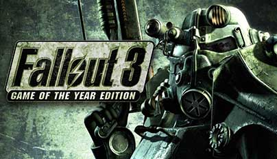
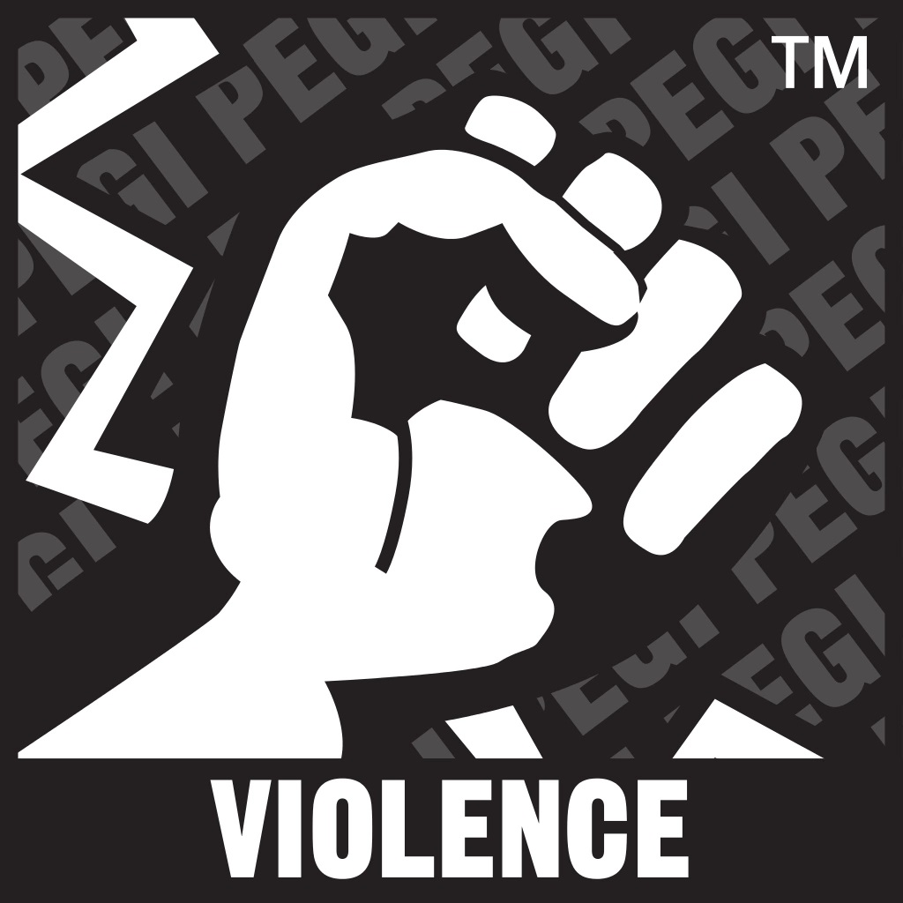
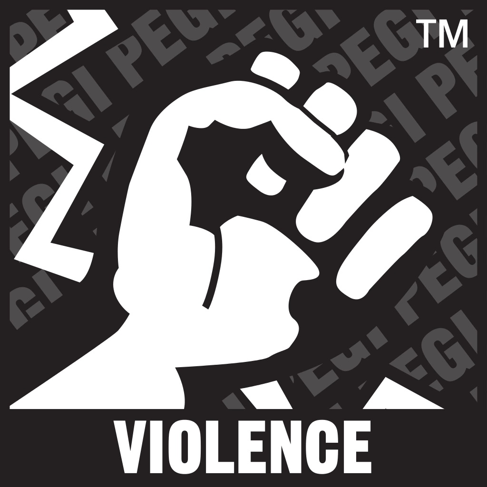

Fallout 3

PLATFORMY
PC
X360
PS3
------

Wiecej Zdj.
Trzecia odsłona popularnego cyklu gier cRPG w postapokaliptycznym klimacie. Produkcją gry Fallout 3 zajęła się ekipa deweloperska Bethesda Softworks, znana przede wszystkim z serii The Elder Scrolls. Osią fabuły gry są poszukiwania ojca.
Fallout 3 to kolejna odsłona kultowej serii z gatunku cRPG, zapoczątkowanej w 1997 roku. Opracowaniem niniejszej części cyklu zajęli się twórcy gry The Elder Scrolls IV: Oblivion, wykorzystując jej ulepszony silnik. Aczkolwiek przykładowo system animacji i efektów świetlnych zaprojektowano od podstaw. Grać można z wykorzystaniem perspektywy FPP lub TPP, ale niezależnie od wybranej kamery wysoka jakość oprawy wizualnej cieszy oko.
Developerzy przedstawili nam życie w postnuklearnej rzeczywistości już od chwili narodzin głównego bohatera. Na początku zostajemy zabrani od konającej przy porodzie matki i poddani przez ojca (głos podłożył Liam Neeson) testowi DNA. Wybieramy wtedy swoją płeć, pochodzenie etniczne, unikalne aspekty aparycji etc. Szczególny nacisk został położony na wygląd twarzy, a po zakończonym procesie ojciec zdejmuje maskę i ukazuje swoje oblicze, będące wyraźnie podobne do naszego.
Z kolei tryb kształtowania siedmiu głównych cech protagonisty zaprezentowano w formie lektury specjalnej książeczki dla dzieci, natomiast zapoznawanie się z systemem sterowania przypomina naukę chodzenia. W wieku dziesięciu lat otrzymujemy pistolet-zabawkę na kulki oraz naręczny komputerek Pip-Boy 3000, pozwalający chociażby na podgląd stanu zdrowia, umiejętności i zbioru posiadanych przedmiotów. Dzięki temu urządzeniu słuchamy również stacji radiowych po uprzednim dostrojeniu się do ich częstotliwości. Rozgłośnie serwują nie tylko oryginalną muzykę z lat czterdziestych i pięćdziesiątych XX wieku, ale także podają istotne informacje (np. odnośnie zadań do wykonania). Nasze przygotowania do wyjścia z Krypty 101 kończą się w wieku lat dziewiętnastu, kiedy ruszamy śladem zbiegłego ojca. Jest to rok 2277.
WYMAGANIA
Minimalne:
Windows XP/Vista. 1GB RAM-u (XP)/ 2GB RAM-u (Vista) procesor Pentium 4 2,4 Ghz Intela lub porównywalny. karta graficzna wspierająca biblioteki DirectX 9,0c, z 256 MB RAM-u; GeForce 6800 lub lepsza/ATI X850 lub lepsza.
Rekomendowane:
Rekomendowane: Core 2 Duo 2.8 GHz, 2 GB RAM, karta grafiki 512 MB (GeForce 8800 lub lepsza), 7 GB HDD, Windows XP/Vista
Rekomendowane: Core 2 Duo 2.8 GHz, 2 GB RAM, karta grafiki 512 MB (GeForce 8800 lub lepsza), 7 GB HDD, Windows XP/Vista
Minimalne:
Windows XP/Vista. 1GB RAM-u (XP)/ 2GB RAM-u (Vista) procesor Pentium 4 2,4 Ghz Intela lub porównywalny. karta graficzna wspierająca biblioteki DirectX 9,0c, z 256 MB RAM-u; GeForce 6800 lub lepsza/ATI X850 lub lepsza.
PEGI


Język Gry
PL napisy, EN napisy i dialogi